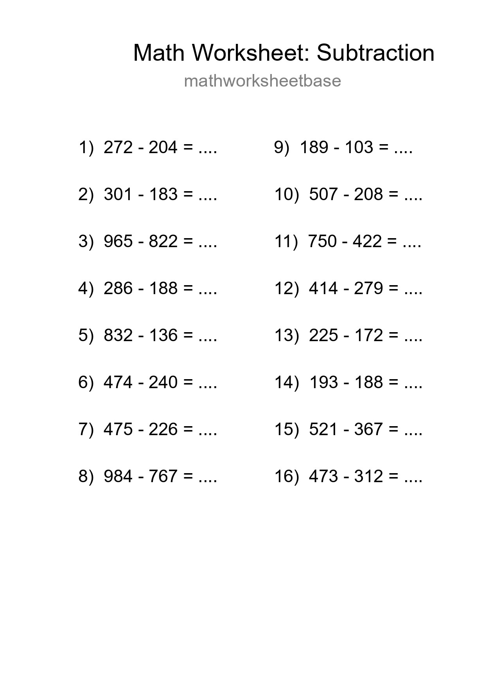
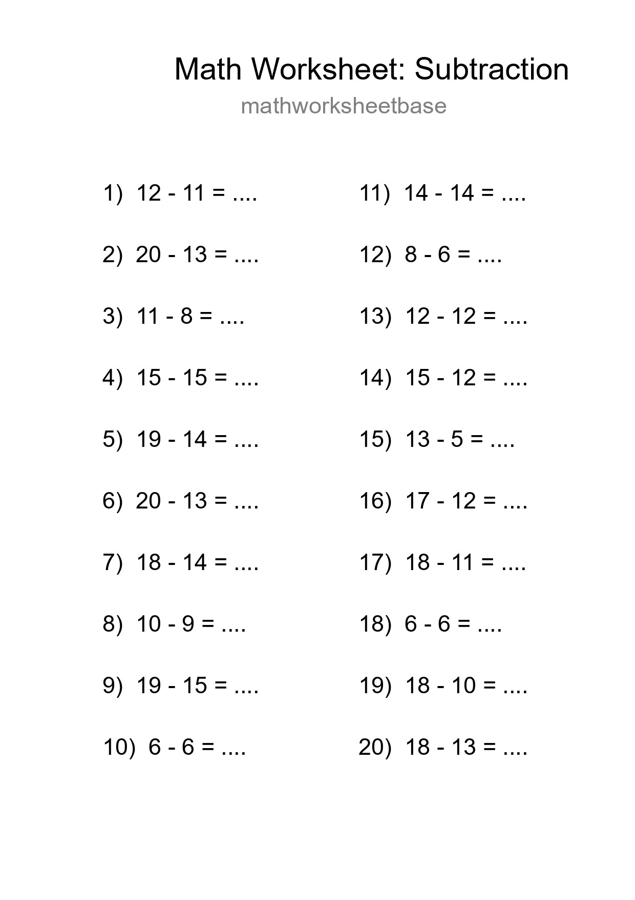
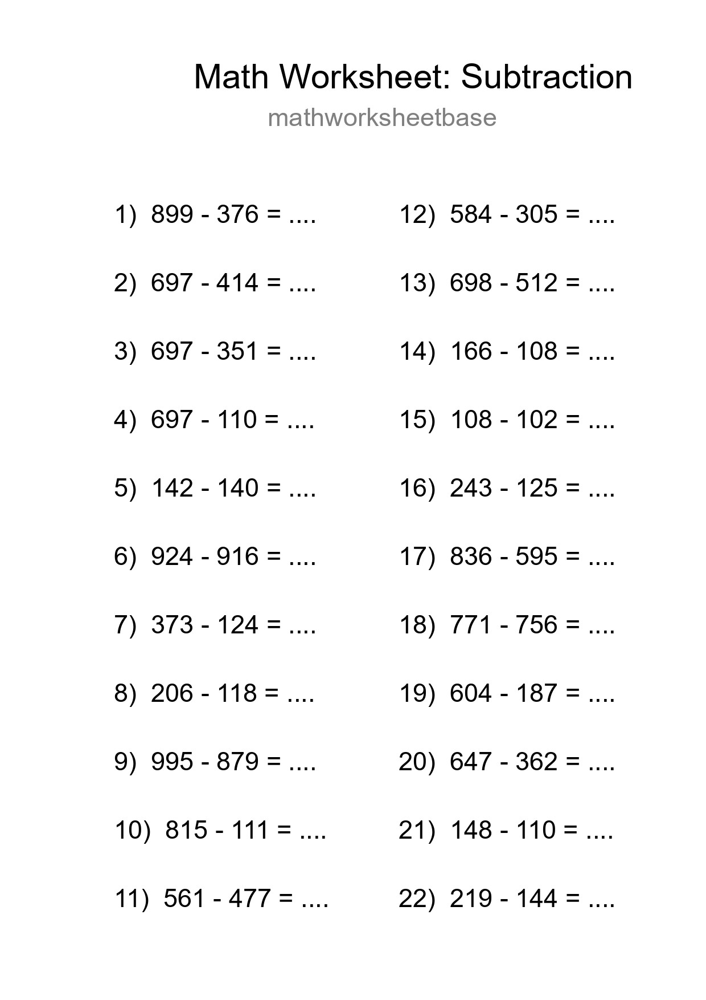
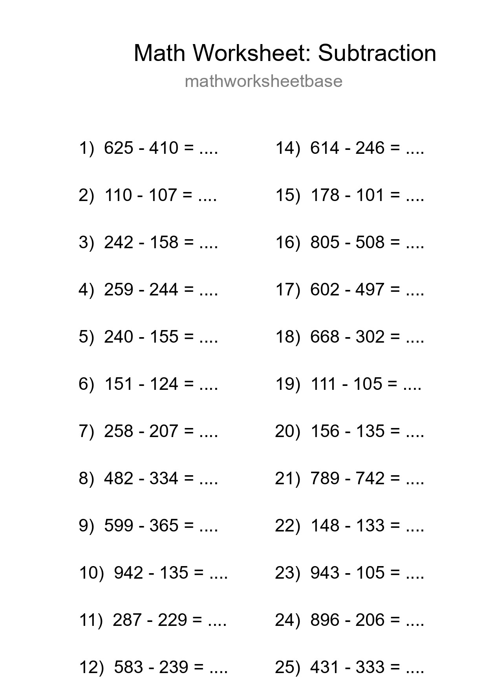
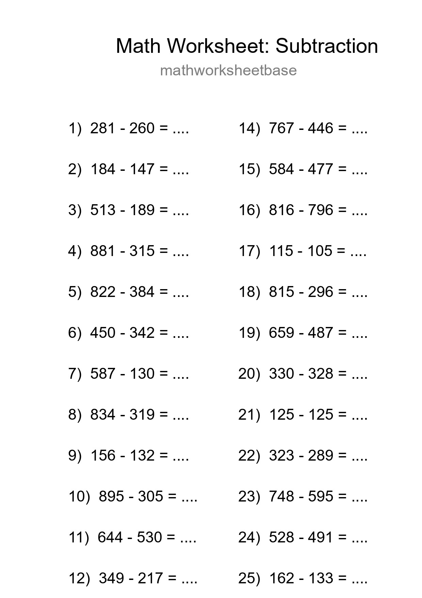
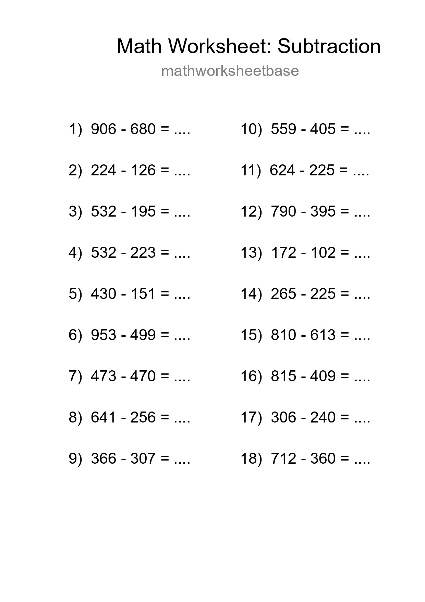
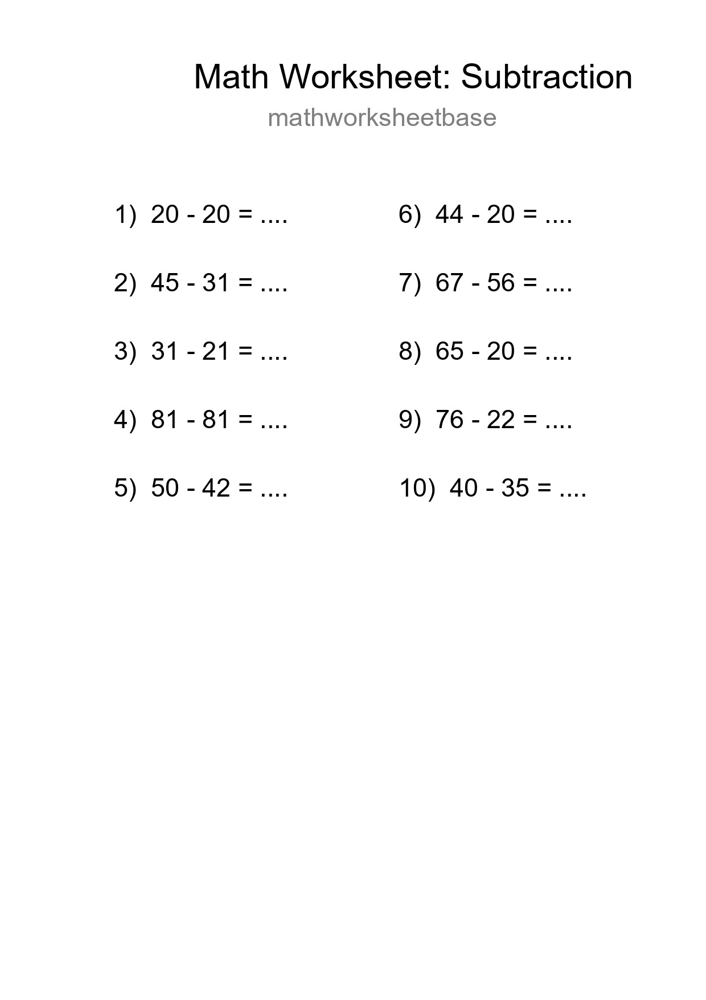
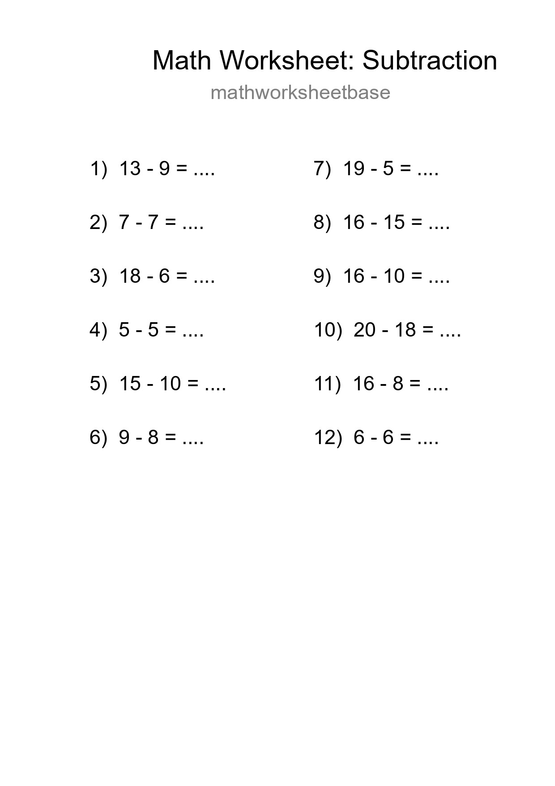

Free 22 Subtraction Math Worksheet For Grade 3 With Answers - Part 9

Printable Free 12 Subtraction Math Worksheet For Grade 2 - Part 21

Printable Free 26 Subtraction Math Worksheet For Grade 3 - Part 33

Free 23 Subtraction Math Worksheet For Grade 5 With Answers - Part 45

Free 10 Subtraction Math Worksheet For Grade 2 - Part 57

Free 11 Subtraction Math Worksheet For Grade 3 With Answers - Part 69

Printable Free 26 Subtraction Math Worksheet For Grade 3 - Part 81

Free 26 Subtraction Math Worksheet For Grade 2 - Part 93

Printable Free 16 Subtraction Math Worksheet For Grade 5 - Part 105

Grade 2 Subtraction Practice Worksheet (20 Problems) - Part 117

Free 22 Subtraction Math Worksheet For Grade 5 - Part 129

Grade 5 Subtraction Practice Worksheet (25 Problems) - Part 141

Grade 5 Subtraction Practice Worksheet (25 Problems) - Part 153

Printable Free 18 Subtraction Math Worksheet For Grade 5 - Part 165

Printable Free 10 Subtraction Math Worksheet For Grade 3 - Part 177
